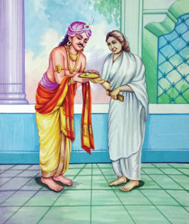
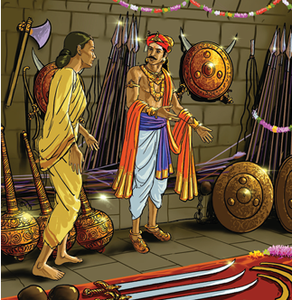

கல்வி அறிவில் சிறந்த அறவோரையும் நல்லொழுக்கம் மிக்க மக்களையும் கொண்டது நம் தமிழ்நாடு, இவர்களைப் போற்றி பாதுகாக்க வேண்டியது மன்னர்களின் கடமையாக கருதப்பட்டது, அறிவிற் சிறந்த புலவர்கள் மன்னர்களுக்குத் தேவையான அறிவுரைகளை வழங்கி நாட்டைப் பாதுகாக்க உதவினர், அவ்வாறு இரண்டு நாடுகளுக்கு இடையே நடைபெற இருந்த போரை அவ்வையார் தடுத்த நிகழ்வை நாடகமாகப் படித்துச் சுவைப்போம்.
இடம்,
அதியமான் அரண்மனை
நாடக மாந்தர்கள்
அதியமான், அவ்வையார், அமைச்சர்
அவ்வையார்,
நாட்டுமக்கள் நலனையே நினைத்து நல்லாட்சி செய்யும் அதியமான் நெடுமான் அஞ்சியே வணக்கம்
அதியமான்,
அவ்வையே வாருங்கள், வாருங்கள், வணக்கம்
அவ்வையார்,
ஊர் ஊராகச் சென்று வந்த என்னை, உன் அன்பினால் கட்டிப்போட்டுவிட்டாய், நானும் நீண்ட காலமாக உன் அரண்மனையிலேயே தங்கி விட்டேன், அதெல்லாம் இருக்கட்டும், காலையிலிருந்து உன்னை அரண்மனையில் காணவில்லையே, எங்கு சென்றிருந்தாய்
அதியமான்,
இன்று நம் அமைச்சரோடும், வீரர்கள் சிலரோடும் காட்டுக்குச் சென்றிருந்தேன், அங்கே இந்த கனியைப் பறித்தேன், இதைச் சாப்பிட்டுப் பார்த்துச் சுவை எப்படி இருக்கிறது என்று சொல்லுங்கள் தாயே, அதியமான் நெல்லிக்கனியை அவ்வையாரிடம் தருகிறார், அவ்வையார் அதனை வாயில் இட்டு சுவைக்கிறார்
அவ்வையார்,
அடடா, என்ன சுவை, என்ன சுவை, என்ன கனி இது
அமைச்சர்,
கிடைப்பதற்கு அரிதான நெல்லிக்கனி இது, எப்போதாவது ஒருமுறைதான் காய்த்துப் பழுக்கும், ஒரு மலையுச்சியில் இருந்த கருநெல்லி மரத்தில் இக்கனி பழுத்திருந்தது, அந்த மரத்தில் நமது வீரர்களால் ஏறமுடியவில்லை, பிறகு நமது அரசரே முயன்று மரத்தில் ஏறி இந்தக் கனியைப் பறித்தார். அது மட்டுமன்று இக்கனியை உண்டவர்கள் நோய்நொடியின்றி நீண்டகாலம் வாழ்வார்கள் என்று பெரியோர் கூறுவர்.
அவ்வையார்,
அதியமானே, என்ன செயல் செய்துவிட்டாய், நாட்டைக் காக்கும் பொறுப்பை உடைய நீ இதனை உண்ணாமல் எனக்கு கொடுத்து விட்டாயே முன்பே தெரிந்திருந்தால் இதனை நான் உண்ணாமல் உன்னையே உன்ன வைத்திருப்பேனே
அதியமான்,
என்னைப்போன்ற ஓர் அரசன் இறந்துபோனால் வேறு ஒருவர் அரசராகிவிடுவார், ஆனால் உங்களைப் போன்ற அறிவிற்சிறந்த புலவர் ஒருவர் மறைந்தால் அந்த இழப்பை யாராலும் ஈடுசெய்ய முடியாது, அதனால்தான் நான் எதுவும் கூறாமல் நெல்லிக்கனியை உங்களை உண்ணச் செய்தேன்.
அவ்வையார்,
அதியமானே தமிழின் மீது நீ கொண்டுள்ள பற்று என் உள்ளத்தை உருகச் செய்கிறது நீ பல்லாண்டு வாழ்க

பெட்டிச் செய்தி ஆரம்பம்
தெரிந்து தெளிவோம்
சிறியிலை நெல்லித் தீங்கனி குறியாது
ஆதல் நின்னகத்து அடக்கிச்
சாதல் நீங்க எமக்கீந்தனையே
ஔவையார்
காட்சி 2
இடம்,
அதியமான் அரண்மனை
நாடக மாந்தர்கள்,
அதியமான், ஔவையார்
அவ்வையார்,
அதியமானே, இன்று உன் முகத்தில் கவலையின் இருள் கவிழ்ந்திருப்பதன் காரணம் என்னவோ,
அதியமான்,
இன்று காலை நம் ஒற்றர்கள் கொண்டுவந்த ஒரு செய்தி என் உள்ளத்தில் சிறு கலக்கத்தை ஏற்படுத்தியிருக்கிறது, மன்னன் தொண்டைமான் நம்மோடு பகைமை கொண்டவன் என்பது தாங்கள் அறிந்ததுதானே, அவன் இப்போது நம்மீது படையெடுத்துவர ஏற்பாடு செய்துவிட்டானாம், நம் தலைக்குமேல் போர்மேகங்கள் சூழ்ந்து விட்டன
அவ்வையார்,
அதியமான் நெடுமான் அஞ்சியே, உன் பெயரில்தான் அஞ்சி என்னும் சொல் இருக்கிறதேயன்றி, நீ அஞ்சி நான் ஒரு நாளும் கண்டதில்லையே, போர் உனக்கு புதிதா என்ன
அதியமான்,
போர் எனக்குப் புதிதும் அன்று, நான் போரைக் கண்டு அஞ்சுபவனும் அல்லேன், ஆனாலும்
அவ்வையார்,
ஆனாலும் ஏன் இந்த கலக்கம், ஈரத்திலும் வீரத்திலும் உனக்கு இணைசொல்ல யாருண்டு, நீர்நிலையில் படுத்திருக்கும் யானையானது, தன் மீது ஏறிக்குதித்தும் தந்தங்களைக் கழுவியும் விளையாடும் சிறுவர்களிடம் பணிந்து அன்புகாட்டும், அதுபோல நீயும் எம்மை போன்ற புலவர்களிடம் அன்புகாட்டிக் காட்சிக்கு எளியவனாக விளங்குகிறாய், அதே யானை, போர்க்களத்தில் பகைவரின் படையை வெருண்டோடச் செய்வதுபோல நீயும் பகைவரை எதிர்த்து வெல்கிறாய், அத்தகைய வீரமுடைய நீ இன்று போரைக்கண்டு தயங்கலாமா
அதியமான்,
தமிழ் அறிந்த அன்னையே, நான் எத்தனையோ போர்க்களங்களைக் கண்டவன், பகைவர்களை வென்றவன் என்பது தங்களுக்குத் தெரியாததன்று, ஆனால் ஒவ்வொரு போரின்போதும் எத்தனை உயிரிழப்புகள், எவ்வளவு அழிவு, தந்தையை இழந்த பிள்ளைகள், கணவனை இழந்த பெண்கள், மகனை இழந்த தாய்மார்கள், அண்ணனை இழந்த தம்பி தங்கைகள், என எத்தனையோ பேரின் கண்ணீர் ஒவ்வொரு போர்வெற்றிக்கு பின்னாலும் மறைந்திருக்கிறது, எனவே இந்தப் போரை தவிர்த்தால் என்ன
அவ்வையார்,
அன்பிற்சிறந்த அதியமானே, இப்போதுதான் உன் உள்ளம் எனக்குப் புரிந்தது, உன் கவலையை நான் தீர்க்கிறேன், நான் இப்போதே தொண்டைமானிடம் செல்கிறேன், அவனிடம் பேசி போர் ஏற்படாதவாறு தடுக்கிறேன்
அதியமான்,
ஆனால்
அவ்வையார்,
நீ என்ன நினைக்கிறாய் என எனக்குப் புரிகிறது, உன் தன்மானத்துக்கும் வீரவுணர்வுக்கும் சிறிதுகூட இழுக்கு ஏற்படாமல் நான் நடந்து கொள்வேன், நான் சென்று வருகிறேன், அவ்வையார் செல்கிறார் அதியமான் திகைத்து நிற்கிறார்
இடம்,
தொண்டைமான் அரண்மனை
நாடக மாந்தர்கள்,
தொண்டைமான், அவ்வையார், படைத்தலைவர்
படைத்தலைவர்,
அரசே வாழ்க, சற்றுமுன்தான் நமது ஒற்றரிடமிருந்து செய்தி வந்துள்ளது, அதியமான் சமாதானம் வேண்டி புலவர் ஒருவரைத் தூது அனுப்பியுள்ளாராம்.
தொண்டைமான்,
என்ன, அதியமான் தூது அனுப்பியுள்ளானா
படைத்தலைவர்,
ஆம் அரசே, அதியமானின் தூதுவராக அவ்வையார் நமது அரண்மனைக்கு வந்து கொண்டிருக்கிறாராம்
தொண்டைமான்,
வரட்டும் வரட்டும், அஞ்சியிடமிருந்து தூதுவரும் அவ்வை நம் போர்க்கருவிகளின் பெருக்கினை கண்டு அஞ்சி ஓட போகிறார் பாருங்கள்
படைத்தலைவர்,
அதோ அவ்வையாரே வந்து விட்டார், அவ்வையார் வருகிறார்.
தொண்டைமான்,
அருந்தமிழ்ப் புலவரான அவையே, வருக, வருக, என் பகைவரின் நாட்டில் இருந்து வந்தாலும் தாங்கள் தமிழ் புலவர் அல்லவா, தங்கள் வருகை எனக்கு மகிழ்ச்சியளிக்கிறது.
அவ்வையார்,
நீயும் தமிழின்மீது அன்புடையவன் என்பதை அறியும்போது நானும் மகிழ்ச்சியடைகிறேன்
தொண்டைமான்,
அந்த மகிழ்ச்சியோடு எனது படைக்கலக் கொட்டிலைப் பார்த்து வரலாம் வாருங்களேன்.
அவ்வையார்,
போர்க்கருவிகளைப் பார்த்து நான் என்ன செய்யப் போகிறேன்.
தொண்டைமான்,
எத்துணைப் பெரிய படைவலிமை உடைய அரசரோடு உங்கள் அதியமான் மோதப்போகிறான் என்பதை நீங்கள் அறிய வேண்டாமா.
ஔவையார்,
அதையும்தான் பார்ப்போம் வா.
இடம்,
படைக்கலக் கொட்டில்
நாடக மாந்தர்கள்,
தொண்டைமான், அவ்வையார்
தொண்டைமான்,
என் படைக்கருவிகளைப் பாருங்கள் அவ்வையாரே, இவ்வளவு பெரிய படைக்கலக் கொட்டிலை இதற்கு முன் நீங்கள் பார்த்திருக்கமாட்டீர்கள்.

அவ்வையார்,
ஆமாம், வில், அம்பு, வேல் ஈட்டி, வாள், கேடயம், மழு என எத்தனை கருவிகள், ஒவ்வொன்றிலும் எத்தனை வகைகள், ஒவ்வொரு வகையிலும் எத்தனை எண்ணிக்கை
தொண்டைமான்,
பார்க்கும்போதே வியப்பாக இருக்கிறது அல்லவா
அவ்வையார்,
ஆமாம், கருவிகளின் அளவு மட்டுமன்றி அவற்றை அழகாக அடுக்கி வைத்திருக்கும் முறையும் கண்களைக் கவர்கிறது, எல்லாக் கருவிகளும் புத்தம் புதியவனாக நெய் பூசப்பெற்று மாலையும் மயில் தோகைகளும் அணிவிக்கப்பட்டு எழிலாக காட்சியளிக்கின்றன.
தொண்டைமான்,
உங்கள் அதியமானின் படைக்கருவிகளை பற்றி சொல்லுங்களேன்.
அவ்வையார்,
அதை ஏன் கேட்கிறாய், அவை இவ்வளவு அழகாக இல்லை, அதியமான் அடிக்கடி போர் புரிந்து கொண்டே இருப்பதால், அவனது படைக் கருவிகள் எல்லாம் பகைவர் உடலைத் துளைத்த குருதிக்கறைகளுடன் நுனி ஒடிந்தும், கூர் மழுங்கியும் கொல்லனின் உலைக்களத்தில் கிடக்கின்றன. தொண்டைமானின் முகம் சுருங்குகிறது.
அவ்வையார்,
தொண்டைமானே ஏன் உன் முகம் மாறிவிட்டது
தொண்டைமான்,
உங்கள் சொற்கள் என்னைக் குழப்பி விட்டன
அவ்வையார்,
என்ன குழப்பம்
தொண்டைமான்,
என் படைக்கருவிகளின் அளவையும் அழகையும் பாராட்டிக் கூறினீர்கள் அதைக்கேட்ட என் உள்ளம் மகிழ்ச்சியடைந்தது, ஆனால், அடுத்ததாக நீங்கள் கூறிய செய்திதான் என்னைச் சிந்திக்க வைத்து விட்டது, அதியமானின் படைக்கருவிகள் போரில் பயன்படுத்தப்பட்டு வளைந்தும் நெளிந்தும் கிடக்கின்றன என்று கூறினீர்களே, அதுதான் எனக்கு உண்மையை புரிய வைத்தது, என்னிடம் கருவிகள் தாம் மிகுதியாக உள்ளன, நான் இதுவரை போர்க்களத்தை கண்டதில்லை, ஆனால் அதியமான் பல போர்களை நடத்தி வெற்றி கண்டவன், அவனோடு போரிடுவது எத்தகைய அழிவை தரும் என்பதை புரிந்து கொண்டேன்.
அவ்வையார்,
அருமை, அருமை, நான் கூறியதன் உட்பொருளைத் தெளிவாகப் புரிந்து கொண்டாய்
தொண்டைமான்,
ஆம், என் கண்களைத் திறந்த தாயே போரைக் கைவிட்டுவிடலாம் என்று அதியமானிடம் கூறிவிடுங்கள்
அவ்வையார்,
மிகவும் மகிழ்ச்சி தொண்டைமானே அவ்வாறே கூறி விடுகிறேன், போரில்லா மகிழ்ச்சியில் இந்த உலகம் திளைக்கட்டும், நான் சென்று வருகிறேன். அவ்வையார் விடைபெற்றுச் செல்கிறார் திரை
1, அறிவுசால் அவ்வையார் என்னும் நாடகத்தை வகுப்பில் நடித்துக் காட்டுக
2, சங்ககாலப் பெண் புலவர்களின் பெயர்களைத் தொகுத்து எழுதுக
அறிவுசால் அவ்வையார் என்னும் நாடகத்தைச் சிறுகதை வடிவில் சுருக்கமாக எழுதுக.